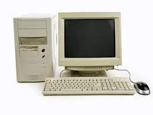

PENGENALAN KOMPUTER
1. Definisi Komputer
Komputer lebih dikenal oleh masyarakat sebagai alat teknologi atau elektronik yang dapat menginput data, memproses data, dan menghasilkan output berupa informasi. Kata komputer berasal dari bahasa Yunani yakni Computare artinya adalah menghitung. Dengan perkembangan teknologi yang semakin canggih, fungsi komputer dari tahun ke tahun selalu berkembang, tidak hanya sebagai alat untuk menghitung saja. Komputer sudah menjadi perlengkapan dan kebutuhan hidup karena kemajuan teknologi yang sangat pesat perkembangannya
2. Perkembangan Komputer dari Tahun ke Tahun
a. Generasi Pertama Komputer yaitu pada tahun (1941 - 1952)
Pada awal masa dimana komputer ditemukan, tujuan utama dari komputer adalah untuk membantu proses perhitungan.
Pada tahun 1946 ditambahkan komponen-komponen dan akhirnya komputer yang ada berukuran besar, memiliki berat yang luar biasa dan pastinya memiliki harga yang mahal. Komputer tersebut adalah ENIAC yang di dalamnya memiliki 18.800 tabung hampa udara dan memiliki bobot 30 ton.
Generasi komputer pertama berdasarkan informasi yang diperolah memiliki ciri-ciri, sebegai berikut:
1. Instruksi yang ditulis ditujukan khusus untuk mengerjakan suatu tugas atau fungsi yang spesifik saja.
2. Bentuk komputer generasi pertama sangatlah besar dan memerlukan ruangan yang sangat luas karena menggunakan vacuum tube (tube vakum) dan magnet bentuk silinder (silinder magnetic).
3. Proses komputasi masih sangat rendah dan boros listrik.
4. Pada generasi komputer pertama ini hanya beberapa orang yang dapat mengoperasikannya, dikarenakan kode mesin yang rumit.
5. Belum adanya bahasa pemrograman dan sistem operasi.
b. Generasi Kedua Komputer yaitu pada tahun (1952-1956-1958)
Generasi kedua, bentuk dari komputer sudah memiliki bentuk agak lebih kecil dibandingkan dengan komputer generasi pertama. Ciri khas komputer generasi kedua adalah ditemukannya Transistor (transfer resistor). Transistor memiliki tiga lapis bahan baku yang terdiri dari basic, collector dan emmiter. Komputer yang sudah menggunakan teknologi ini adalah jenis dari Super Komputer. Pada komputer generasi kedua energi yang digunakan relatif hemat, bisa lebih diandalkan, dan kecepatannya relatif lebih cepat dilihat dari performa dan proses komputasinya. Hal yang membuat komputer generasi kedua ini menarik adalah sudah digunakannya bahasa pemrograman yaitu COBOL (Common Business Oriented Language) dan FORTRAN (Formula Translator).
c. Generasi Ketiga Komputer yaitu pada tahun (1958 – 1970)
Generasi ketiga ini, secuil silicium adalah salah satu penemuan pada masa ini yang memiliki bentuk ukuran hanya beberapa milimeter, yang lebih dikenal sebagai IC-Chip (Integrated Circuit). IC-Chip mulai digunakan dari komputer di generasi ketiga. IC dapat meminimalkan panas yang dihasilkan oleh komputer, mampu mengintegrasikan komponen ke dalam satu chip, yang membuat ukuran sebuah komputer semakin kecil dan cenderung tidak cepat panas. Pada komputer generasi ketiga ini sistem komputer yang digunakan mulai mampu untuk menjalankan beberapa tugas sekaligus atau multi tasking.
d. Generasi Keempat Komputer yaitu pada tahun (1970 – 1980)
Yang menjadi ciri khas pada generasi keempat adalah Microprocessor dimana terdapat pemadatan ribuan IC pada sebuah Chip. Microprocessor adalah awal mulanya kelahiran komputer personal. Intel Corp pada tahun 1971, dengan Microprocessor pertamanya serie 4004.Apple I Komputer yang dikembangkan oleh Steve Wozniak dan Steve Jobs merupakan contoh dari komputer generasi keempat yang memasukan sebuah microprocessor ke dalam circuit board komputer. Kemudian muncul TRS Model 80 dengan jenis processor Motorola 68000 dan Zilog Z-80 yang menggunakan 64Kb RAM standard. Pada generasi ini komputer mulai mudah digunakan, antara lain dengan adanya tampilan GUI (Graphic User Interface), pemakaian mouse, dan lain-lain.
e. Generasi Kelima-Sekarang (1980 hingga saat ini)
Munculnya generasi kelima yaitu dengan datangannya: LSI (Large Scale Integration) dimana ini dilakukan dengan cara pemadatan ribuan Microprocessor yang dimasukan pada sebuah Microprocesor. Munculnya semiconductor dan microprocessor juga merupakan ciri khas pada generasi ini. Dimana perusahaan seperti Intel Corporation, Motorola, Zilog dan lainnya sedang membuat Microprocessor. Banyak kita temui Microprocessor buatan Intel dengan model 4004, Pentium dsb.
f. Generasi Keenam Komputer (Masa Depan)
Perkembangan komputer pada era generasi ini disebut sebagai komputer masa depan. Para penggiat teknologi atau para peneliti banyak memiliki ide hingga memiliki impian-impian begitu pula dengan para pengguna yang ingin melihat atau membuat komputer lebih canggih untuk masa depan guna dapat membantu manusia dalam mengerjakan aktifitasserta kegiatan sehari-hari. Contohnya seperti penggunaan robot yang dapat berperan serta dalam kegiatan manusia. Hal yang didukung oleh komputer masa depan adalah komputer dengan kemampuan untuk yang dapat meminimalisir proses menggunakan baris program atau dikenal dengan programless. Ciri-ciri komputer generasi keenam secara umum yaitu memiliki bentuk yang lebih beragam, tingkat kecerdasaannya menyerupai manusia, lebih canggih, dan mampu melakukan proses prediksi yang akan terjadi dan masih banyak kecanggihan lainnya dimana kecanggihan tersebut lebih mutakhir dari teknologi-teknologi saat ini
3.Penggolongan Komputer
a. Processor
Jenis komputer berdasarkan prosesornya digolongkan menjadi tiga, yaitu
Mainframe, Minicomputer dan Personal Computer (PC).
1. Mainframe
Mainframe merupakan komputer yang memiliki prosesor dengan kemampuan yang sangat besar, dikarenakan komputer jenis ini ditunjukan untuk banyak pemakai. Komputer mainframe memiliki CPU disatu mesin, memiliki perangkat penyimpanan, komunikasi disatu mesin tersendiri yang dihubungkan dengan banyak terminal yang terdiri dari monitor dan keyboard saja. Komputer mainframe biasa digunakan di perusahaan yang bersekala besar, contohnya adalah kantor pusat penerbangan nasional.
2. Minicomputer
Minicomputer merupakan sisi mini dari komputer mainframe. Jika pada mainframe dapat memiliki terminal yang jumlahnya ribuan maka mini hanya dapat sampai puluhan atau ratusan. Komputer jenis ini tentunya sekarang jarang dipergunakan, dikarenakan PC lebih flexible dan perkembangannya pesat dengan adanya teknologi Local Area Network (LAN).
3. Personal Computer (PC)
Personal Computer (PC) merupakan komputer diperuntukan hanya satu pemakai dengan satu pemakai program aplikasi. Perangkatnya yang simpel dan dapat diringkas ke dalam satu mesin saja. Komputer ini mempunyai keyboard, monitor, dan CPU.
b. Jenis Komputer Berdasarkan Bentuk dan Ukuran Fisi
1. Tower
Dikarenakan ukuran yang relatif besar biasanya jenis ini menaruhnya disamping ataupun dibawah meja. Jenis komputer ini menyediakanbanyak ruang di dalamnya dan menyediakan banyaknya expansionslot (tempat memasang card tambahan), sehingga dapat menambahkan berbagai perangkat atau accessories pendukung lainnya.
2. Desktop
Desktop yaitu komputer yang sedikit lebih kecil ukurannya dari Tower, pada jenis komputer ini tentunya banyak digunakan karena harganya relatif lebih terjangkau jika dibandingkan dengan bentuk dan ukuran yang lain. Komputer pada masa ini yang banyak kita temui dan kita gunakan adalah jenis desktop.
3. Portable
Komputer jenis Portable memiliki ukuran lebih kecil dari jenis komputer desktop, hal ini bisa terjadi dikarenakan adanya bagian yang dirangkai menjadi satu kotak saja, sehingga lebih mudah untuk dibawa. Komputer jenis ini paling sering ditujukan oleh orang yang sering bertugas di luar kantor/sering bertugas di lapangan.
4. Notebook
Komputer jenis ini besarnya hanya seukuran buku saja. Ukuran komputer Notebook hanya sebesar kertas kuarto, yaitu 8½ x 11 inch, tebalnya berkisar 1 inch sampai 1½ inch dan memiliki berat antara 4 kg sampai 6 kg.
5. Subnotebook
Jenis komputer ini memiliki ukuran yang lebih kecil jika dibandingkan dengan komputer Notebook dikarenakan adanya komponen pada perangkat yang tidak dipasang, contohnya seperti Diskdrive.
6. Palmtop
Palmtop atau disebut juga komputer dalam genggaman, hal ini karena ukuran komputer tersebut yang sangat kecil. Komputer ini sering disebut juga dengan handheld komputer. Komputer jenis ini memiliki kelemahan diantaranya seperti display tampilan layar, keyboard dan monitor yang terlalu kecil sehingga menyulitkan pemakai.
c. Komputer Berdasarkan Jenis Data yang Diolah
Komputer berdasarkan dari jenis data yang diolah dibedakan menjadi 3 bagian yaitu:
1. Komputer Analog
Data kualitatif biasanya diolah menggunakan komputer jenis ini, dimana komputer dapat bekerja secara berkelanjutan dan paralel, dan tidak perlu adanya bahasa perantara. Contoh pada komputer jenis ini digunakan di rumah sakit untuk pengukur suhu, voltase pada listrik, kecepatan suara dan lainnya. Komputer jenis ini memiliki kelebihan seperti menerima data dalam besaran fisik dan langsung mengukur data yang telah diterima tanpa harus dikonversikan terlebih dahulu seperti pada komputer digital, sehingga proses pada komputer jenis analog ini lebih unggul kecepatannya dibandingkan dengan komputer digital. Kekurangan dari komputer jenis ini adalah terletak pada faktor keakuratannya, komputer digital lebih akurat dibandingkan dengan komputer analog.
2. Komputer Digital
Data kuantitatif biasanya diolah menggunakan jenis komputer ini, contohnya seperti angka, huruf, kombinasi angka dan huruf, karakter-karakter khusus dan tentunya membutuhkan bahasa perantara. Contohnya komputer PC, dan lain-lain.
3. Komputer Hybrid
Komputer jenis ini adalah gabungan dari komputer analog dengan komputer digital. Di dalam aplikasi yang khusus dibutuhan suatu komputer yang mampu menyelesaikan permasalah lebih cepat dari komputer analog dan lebih tepat dari komputer digital. Contohnya Facsimile
d. Komputer Berdasarkan Penggunaannya
Jenis komputer berdasarkan penggunaanya adalah sebagai
berikut:
1. General Purpose Computer
Masalah.bisnis serta.masalah lainnya cocok akan mudah dipecahkan
dengan menggunakan komputer jenis ini. Selain itu, untuk.komputer
pribadi.sangat bagus.menggunakan jenis general purpose computer.
2. Special.Purpose.Computer
Masalah yang dipecahkan oleh komputer ini biasanya adalah masalah
yang memiliki spesifik khusus. Tidak semua masalah bisa dipecahkan.
Suatu program untuk proses tertentu dimasukkan ke dalam kompute
金村美玖

かねむら みく
Saitama, September 10 2002
On August 15th, passed the auditions to become a member of Hiragana Keyakizaka46's 2nd Generation.